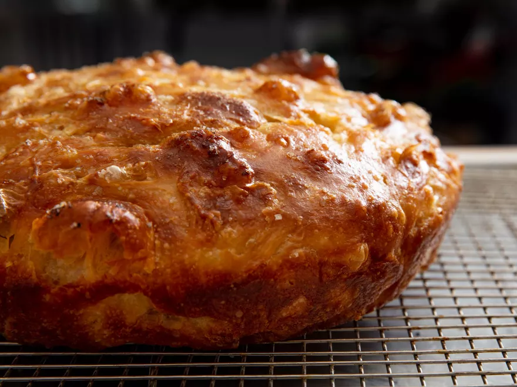

Go Back To Main Page
My Kitchen
I like cooking too! Here are a few of my favorite recipes:
Focaccia Bread
By:
Sasha Marx

Creamy Tomato Soup
By:
J. Kenji López-Alt
West African Inspired Peanut and Sweet Potato Stew w/ Thai Spices
By:
J. Kenji López-Alt